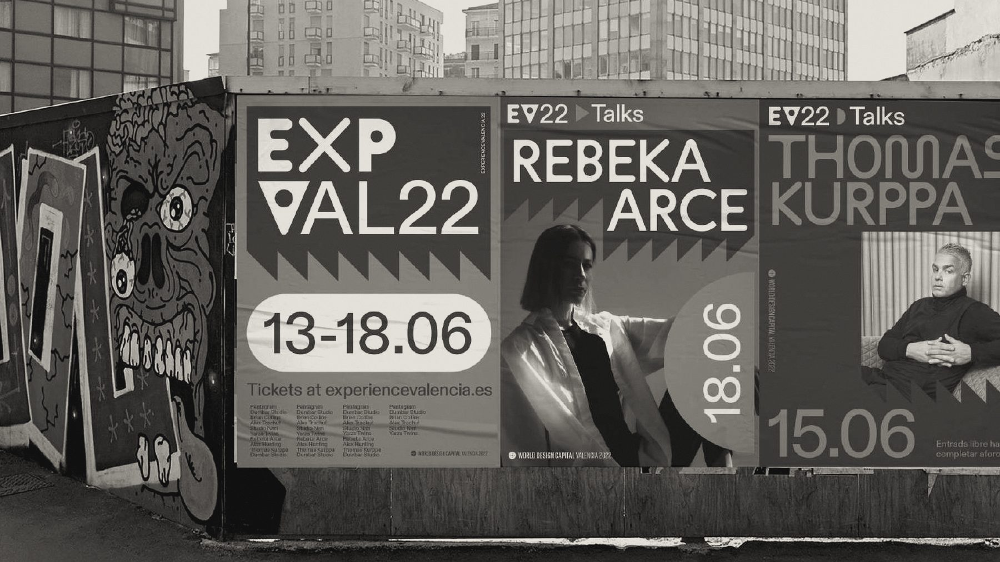

Experience ValenciaCurator & Director, 2021–2022A Signature Event of World Design Capital València 2022: a week with leading designers from around the world. I curated the programme and speakers and created the brand together with Koln studio.